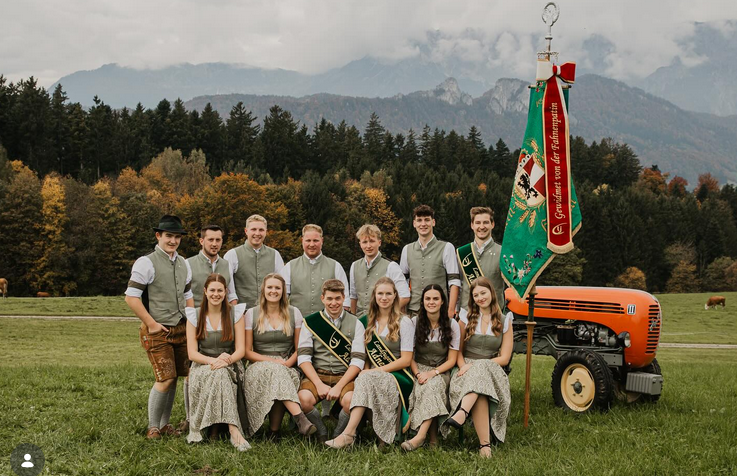

Thomas Auer
Obmann
Als Obmann führt Thomas die Landjugend Adnet mit Herz und Engagement seit der Wiedergründung 2023.
Die Köpfe hinter der Landjugend Adnet – mit Leidenschaft und Engagement für unseren Verein.
Im September 2025 wurde unsere Sarah Nestler (22) bei der 74. Generalversammlung der Landjugend Salzburg in der Stiegl-Brauwelt zur Landesleiterin der größten Jugendorganisation Salzburgs gewählt – gemeinsam mit Noah Fischer aus Piesendorf. Ein Meilenstein für die LJ Adnet!

Obmann
Als Obmann führt Thomas die Landjugend Adnet mit Herz und Engagement seit der Wiedergründung 2023.

Obfrau
Verena leitet den Verein gemeinsam mit Thomas und sorgt für einen reibungslosen Ablauf im Vereinsalltag.

Obmann Stv.
Als stellvertretender Obmann unterstützt Tobias die Vereinsführung und steht bei allen Vorhaben hinter dem Team.

Obfrau Stv. & Kassier
Lea ist stellvertretende Obfrau und verantwortet als Kassier die Finanzen der Landjugend Adnet.

Fähnrich
Christian trägt stolz die Fahne der LJ Adnet. 🥇 Team-Laufbewerb Sommerspiele 2025 · 🥇 Genussolympiade Landesentscheid
Fähnrich Stv.
Philip unterstützt als stellvertretender Fähnrich beim Tragen und Repräsentieren unserer Vereinsfahne.

Schriftführer
Als Schriftführer hält Martin alle wichtigen Beschlüsse und Protokolle des Vereins gewissenhaft fest.

Sportreferent
Leo koordiniert als Sportreferent unsere Teilnahme bei Bewerben und Sportveranstaltungen der Landjugend.

Agrarreferent
Matthias stärkt als Agrarreferent den landwirtschaftlichen Bezug der LJ Adnet. 🥇 Genussolympiade Landesentscheid 2025 · 🏅 5. Platz Bundesentscheid Wieselburg

Medienreferentin
Annika verantwortet als Medienreferentin unsere Social-Media-Auftritte und die Kommunikation nach außen.
Wir suchen immer engagierte Mitglieder, die unseren Verein aktiv mitgestalten möchten. Sprich uns einfach an!
Mitmachen